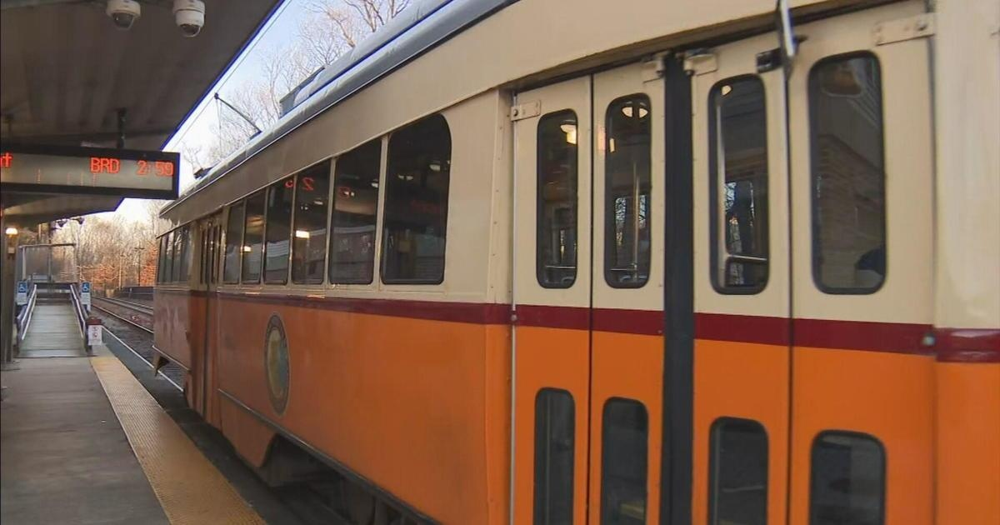

Opposition growing in Milton to policy requiring multi-family homes near MBTA stationsMILTON - A housing debate has the residents of Milton divided. "It just allows more housing, that's what it gets down to," said longtime resident Robert Rosofsky. The MBTA Communities Act requires more than 150 cities and towns with transit service to zone for multi-family housing near their stops. In Milton, the Mattapan trolley runs parallel to the town. Supporters believe it will alleviate the housing crisis and make the town with roughly 28,000 residents more inclusive. "If you look at the current median cost for buying a home, it's just nearly a million dollars here," Rosofsky said. "That's not affordable for a lot of people." Others aren't so welcoming of the idea of bringing at least 2,461 new units to a town with mostly single-family homes. "Milton has four little trolleys. They're not the subway," said one critic. The local group "Milton Neighbors for Responsible Zoning" is fighting back against the state mandate, arguing there are just too many unknowns. "It's impossible for us to understand how adding half of those 2,461 units, how that's going to be accomplished. There's just no room," said Brian O'Halloran, who's leading the charge to delay the zoning. The group is concerned about space, the cars and added traffic new residents would bring to a town like Milton. "There's environmental impacts," O'Halloran added. Communities like Braintree and Newton saw similar pushback but reached a compromise with the state. In Milton, O'Halloran and other opponents gathered enough signatures to put the issue up for a town-wide vote. Problem is, they're running up against a Dec. 31 deadline to comply with the state law. "There's no regulations. The governor has no power to enforce penalties," one critic argued. Gov. Maura Healey is threatening to withhold state grants from towns trying to delay the zoning process. Despite the uncertainty, a long-time Milton resident can't seem to understand why some of her neighbors can't embrace change. "Because we can accommodate more people in Milton. We're right next to Boston. It's a desirable town. People love it," said Cheryl Tougias. "We can welcome new residents here just like we were all welcomed when we moved here." It's unclear when the town-wide ballot would be held. Each signature collected for the ballot initiative must be certified before the town can select a voting date. for more features. |
 |